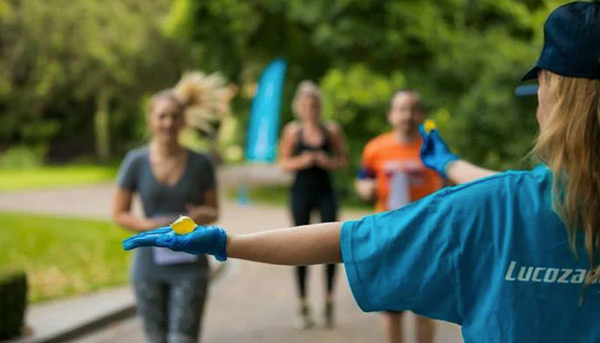

Fonte Imagem : Bored Panda
Londres deu o exemplo: usou pequenas cápsulas de água biodegradáveis e comestíveis para matar a sede dos atletas e assim, diminuiu o uso de copos plásticos descartáveis na maratona da semana passada.
As bolinhas reduziram de 920 mil para 704.000 mil o uso de garrafas de água durante a corrida.
A embalagem, feita de algas, pode ser facilmente consumida. Basta por na boca, apertar com os dentes e ela se rompe. Ela não tem sabor.
Se for descartada, não tem problema porque a cápsula é biodegradável. Ela se desfaz em 4-6 semanas sem deixar resíduos para trás.
As bolinhas podem ser usadas não só para armazenar água, mas também para outras bebidas, como sucos e coquetéis.
Um dos fatores mais importantes na criação dessas cápsulas comestíveis é o fato de que as algas marinhas podem crescer até 1 m por dia e não precisam de água doce ou fertilizante. Elas também contribuem ativamente para a desacidificação dos oceanos.
A boa nova foi uma parceria com aSkipping Rocks Lab, a startup que criou bolinhas de água comestíveis, chamadas Ooho. Elas são feitas de algas marinhas.
A startup londrina foi criada em 2013 por Rodrigo Garcia Gonzalez e Pierre Paslier, enquanto estudava Engenharia de Projetos de Inovação no Imperial College London e no Royal College of Art.
O projeto foi recentemente expandido e agora está usando a mesma técnica para armazenar molhos também, como catchup.
A equipe também quer criar outras formas para substituir o plástico, como redes para armazenar frutas e legumes, f ilmes termosseláveis e embalagens para produtos não alimentícios, como parafusos, pregos ou ferragens.
Fonte Notícia : Só Notícia Boa
Fonte Imagem: Bored Panda
Fonte Imagem: Bored Panda